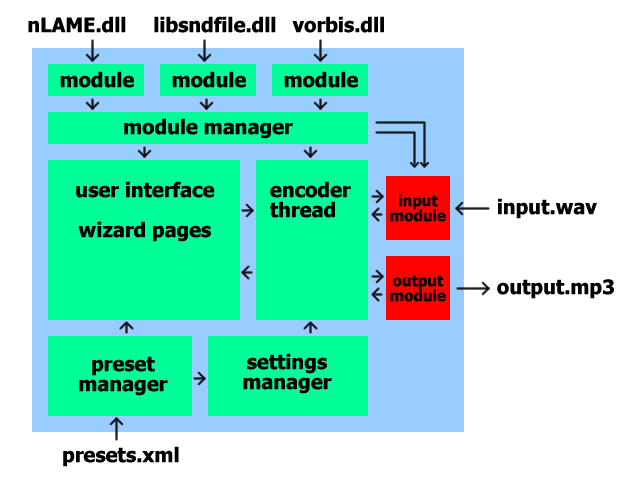

In this document the architecture of the winLAME application is explained. Here is a schematic image of the components of winLAME:

The user interface handles all visible components, the displayed wizard pages, the user interaction and so on. It interacts with the preset manager and the settings manager, to get and set parameters via the different config pages. The module manager is queried, to get the available modules for input and output. It also uses the encoder via a specified interface (to separate the encoding process).
The preset manager mainly reads in the prsets.xml file, to get the different presets. The settings manager is used to store the settings for a particular encoding session. The variables can be modified via the user interface, e.g. when the user changes a value.
The module manager handles all available input and output modules. Input modules can read in files and produce sample streams, whereas output modules can produce files in their format. There are modules for reading and writing wave format, producing MPEG Layer 3 (via LAME), de- and encoding Ogg Vorbis and (via an optional DLL) de- and encoding AAC files.
The encoder thread encodes one file at a time. The settings for the modules are retrieved from the settings manager. The encoder takes sample data from the input module and passes it to the output module. The samples are stored in a sample container, which can hold multiple channel streams, and up to 32 bit wide samples.